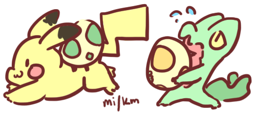

Nicole Baptist

Photography
Taken with the whopping 12MP camera of my trusty S7. While I'm far from a professional, I like to capture and share the colors of my home and the other wonderful places I've visited.2D Animation
Traditional 2D animation is an animation technique in which each frame is drawn by hand.
2D Animation
Traditional 2D animation is an animation technique in which each frame is drawn by hand.

Digital Painting
Digital painting is an emerging art form in which traditional painting techniques such as watercolor, oils, impasto, etc. are applied using digital tools by means of a computer, a graphics tablet and software.Ink + Markers
Ink is used to finalize a pencil sketch and make the marker color really pop! I especially like working with these for their cartoon-ey look and the way mistakes can easily become a feature.3D (Computer) Animation
By modelling an object and defining its physical properties, computer software can be used to generate life-like simulations of the object and its behavior.3D Printing
3D printing, or additive manufacturing, is the construction of a three-dimensional object from a CAD model or a digital 3D model. While I use this often in my engineering projects, I also enjoy printing figurines of characters for fun.
Digital Painting
Digital painting is an emerging art form in which traditional painting techniques such as watercolor, oils, impasto, etc. are applied using digital tools by means of a computer, a graphics tablet and software.Mixed Media
Sometimes more media are better than one!
Digital Painting
Digital painting is an emerging art form in which traditional painting techniques such as watercolor, oils, impasto, etc. are applied using digital tools by means of a computer, a graphics tablet and software.
Photography
Taken with the whopping 12MP camera of my trusty S7. While I'm far from a professional, I like to capture and share the colors of my home and the other wonderful places I've visited.
Digital Painting
Digital painting is an emerging art form in which traditional painting techniques such as watercolor, oils, impasto, etc. are applied using digital tools by means of a computer, a graphics tablet and software.3D (Computer) Animation
By modelling an object and defining its physical properties, computer software can be used to generate life-like simulations of the object and its behavior.Digital Painting
Digital painting is an emerging art form in which traditional painting techniques such as watercolor, oils, impasto, etc. are applied using digital tools by means of a computer, a graphics tablet and software.Rotoscope
Rotoscoping is an animation technique that animators use to trace over motion picture footage, frame by frame, to produce realistic action.© 2021 by yours truly.
Built from scratch with ♡ via BaptistBot.